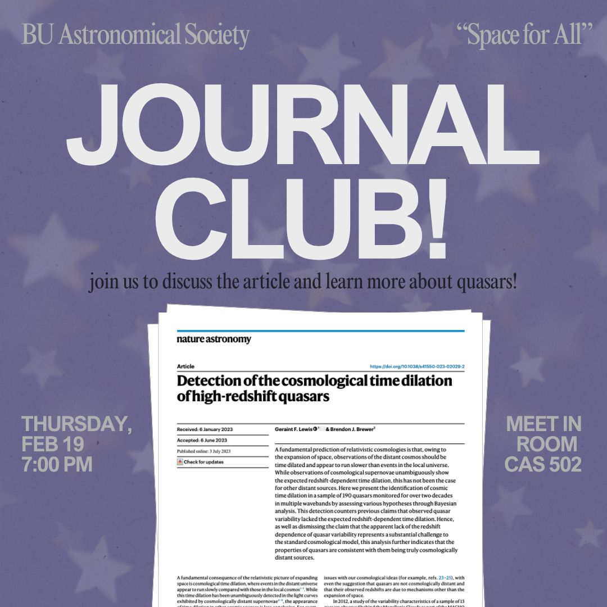
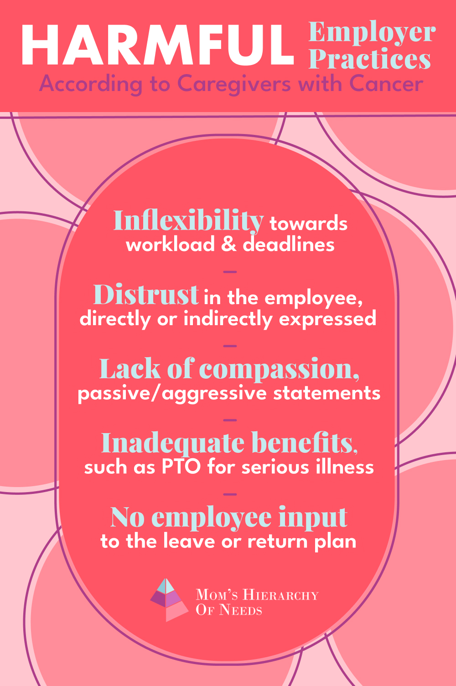
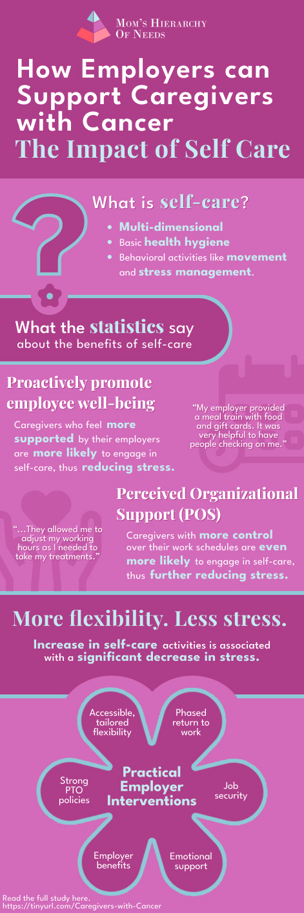

Hi, I’m Larianna!
- Boston University
- B.S. Data Science
- Class of May 2028
Portfolio
Data science student who designs with both people and data in mind.
Solo semester project · UX/UI Design · Boston University
An app that helps adults entering or re-entering the workforce build a professional wardrobe.
ResultA user interface with features including a scoring system, outfit builder, budget-inspired shopping list, and a personal, digital wardrobe.
Figma · user interviews · affinity mapping · personas · user flows

Group project · Applied Statistics · Boston University
A logistic regression analysis of 6,421 fatal police shootings, asking which circumstances go with the person showing signs of mental illness.
ResultPeople with a knife or other non-gun object had about twice the odds of showing signs of mental illness as people with a gun. People who were fleeing had 60–74% lower odds.
R · logistic regression · model comparison (AIC) · calibration checks
Group monthly challenge · FORGE · Boston University
An app that helps students find clubs and communities that match their interests on a large, diverse campus.
ResultAn app that allows students to swipe through campus organizations, add events to a calendar, view student and club profiles, and chat with each other.
Figma · personas · user flows · low fidelity · high fidelity · prototyping

Social Media Coordinator · BU Astronomical Society
Reusable Canva templates that give the club's meeting announcements a consistent, recognizable look.
ResultAveraged 3000+ views per post and achieved attendance of 40+ new members for meetings.
Canva

Graphic Design & Branding Apprentice · Mom’s Hierarchy of Needs, LLC
Infographics that turn a study on caregivers with cancer into something employers can understand at a glance.
Result[Where the graphics were published or how they were used.]
Figma


The end (for now)
Tell me a little about it. I’d love to hear from you.
lariannaramsey@gmail.com